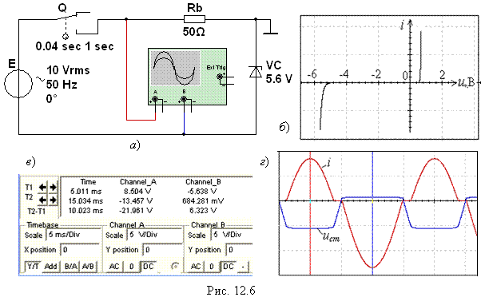

Задание 3. Открыть файл 12.6.ms10, размещённый в папке Circuit Design Suitе 10.0, или собрать на рабочем поле среды МS10 схему (рис. 12.6, а) для наблюдения динамической ВАХ стабилитрона на экране двухканального осциллографа.
При этом напряжение ucт(t) с анода
стабилитрона подаётся на вход канала В,
а напряжение ub c резистора Rb, пропорциональное току i(t) стабилитрона, подаётся на вход канала А
в режиме А/B сложения сигналов (рис.
12.6, б) или в режиме Y/Т сигналы-время (рис. 12.6,
г). Управляемый временем контакт Q (время включения Time on = 0,01 c; время выключения Time off = 0,04 с) включен в цепь для
ограничения времени воздействия на цепь и выбора полярности синусоидального
напряжения источника питания с ЭДС Е » 2 Ucт.
При подаче положительной
полуволны напряжения источника Е на анод стабилитрона (прямое включение,
правая часть характеристики i(u)) напряжение на стабилитроне ucт = uст.пр, а при обратном включении
напряжение пробоя p-n перехода стабилитрона uст.обр должно мало изменяться при амплитуде напряжения источника Eт ³ Uст, т. е. uст.обр » Uст.
Получить на экране осциллографа динамическую ВАХ ucт(icт) в режиме А/B
функционирования осциллографа и осциллограммы напряжения ucт(t) и тока icт(t) в режиме Y/Т работы осциллографа.
Скопировать схему цепи, динамическую ВАХ и осциллограммы напряжения
и тока стабилитрона на страницу отчёта.

Сравнить статическую и динамическую вольтамперные характеристики
стабилитрона и сделать заключение об инерционности нелинейного элемента VC в режиме
проведенного эксперимента (частоты ЭДС е).
В качестве примера на рис. 12.6, б приведена динамическая ВАХ стабилитрона
(Uст = 5,64 В), снятая при ЭДС
E = 10 B и осциллограммы напряжения ucт(t) и тока icт(t) (рис. 12.6, в): прямое напряжение Uпр = 0,684 В, а обратное Uобр = Uст = 5,64 В практически не изменяется при амплитуде напряжения
источника Eт ³ Uст.
Сравнение статической (см. рис. 12.4) и динамической
(рис. 12.6, б) вольтамперных характеристик стабилитрона показывает, что
этот нелинейный элемент безинерционный.